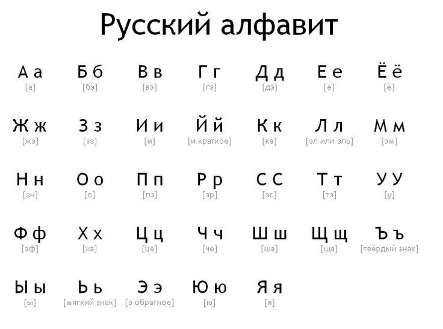

Tự học Tiếng Nga¶
Đây là một hướng dẫn (lộ trình) tự học Tiếng Nga thông qua Comprehensible Input (Nội dung dễ hiểu) và Immersion, hoàn toàn miễn phí.
Bạn sẽ cần thời gian. Rất nhiều thời gian. Không thể học một ngôn ngữ chỉ trong một tháng, ai nói vậy thì chỉ nói vớ vẩn thôi. Điều quan trọng là phải học liên tục mỗi ngày, hoặc ít nhất là gần như vậy. Bạn cần xây dựng thói quen tiếp xúc thường xuyên với ngôn ngữ, đó là cách duy nhất để tiến bộ thật sự. Có nhiều ước tính ngoài kia về tổng số giờ cần để học một ngôn ngữ. Khi mình dành nhiều thời gian hơn mỗi ngày, mình tiến bộ nhanh hơn -- đơn giản vậy thôi.
Bạn nên (cần) đọc Hướng dẫn tự học ngoại ngữ đầy đủ này để hiểu về phương pháp học ngoại ngữ được trình bày trong trang này.
Nền tảng¶
Cyrillic (Bảng chữ cái)¶

Nhìn qua bảng chữ cái Tiếng Nga phát
Tuy vậy, cần lưu ý: đọc quá nhiều quá sớm có thể làm hỏng phát âm. Chính tả tiếng Nga không ghi trọng âm, và nguyên âm thường bị biến đổi khi không nhấn. Nếu bạn quen đọc sai từ, sau này rất khó sửa. Vì thế:
- Học Cyrillic sớm (chỉ để nhận diện, không cần đọc trôi chảy).
- Tập trung vào NGHE trước.
- Có thể đọc, nhưng cần ưu tiên nghe cho đến khi tai bạn quen dần với ngôn ngữ.
đây là một video
Từ vựng¶
Anki là một trong những ứng dụng ôn tập từ vựng mình yêu thích nhất. Đây là app flashcard cho phép bạn dùng bộ thẻ có sẵn hoặc tự tạo của riêng mình! (Bấm vào đây để tìm hiểu thêm về Anki và cách sử dụng).

Mình sẽ dùng Russian Core 5000 trên Anki để học 5.000 từ phổ biến nhất (Bạn có thể chỉ cần học 1000 từ cơ bản nhất là được), rồi chuyển sang sentence mining (hay còn gọi là đào câu, đọc hướng dẫn về Sentence Mining để biết thêm chi tiết). Đây là kỹ thuật lấy từ và câu mới trực tiếp từ tài nguyên immersion bằng công cụ như ASBplayer (Bấm vào đây để xem hướng dẫn sentence mining bằng ASBplayer).
Ngữ pháp¶
Hãy bắt đầu với một hướng ngữ pháp cơ bản (mình sẽ gợi ý bên dưới), sau đó dùng website tham khảo khi bạn thắc mắc. Đừng cố nhớ từng quy tắc — chỉ cần quen đến mức câu tiếng Nga không còn giống như chuỗi âm thanh ngẫu nhiên.
Tài liệu ngữ pháp gợi ý:
- Học Tiếng Nga - Ngữ pháp (Việt Nga)
- Russian Enthusiast – rõ ràng và đầy đủ.
- RussianLearn – rất chi tiết, dùng để tra cứu.
Comprehensible Input (Nội dung dễ hiểu)¶
Đây là loại input mà bạn hiểu được phần lớn nội dung, dù vẫn có một vài từ hoặc cấu trúc bạn chưa biết. Nhờ ngữ cảnh, hình ảnh, hoặc kiến thức sẵn có, bạn vẫn đoán được ý chung của câu hoặc đoạn văn. Theo thời gian, não bộ sẽ tự động liên kết những "mảnh ghép còn thiếu" với ý nghĩa phù hợp --- mà không cần phải dịch từng từ.
Nói cách khác: bạn không cần hiểu 100% mọi thứ. Chỉ cần hiểu đủ để theo kịp nội dung.
Đây chính là lý do Comprehensible Input rất hiệu quả: bạn tiếp xúc với ngôn ngữ trong ngữ cảnh thực tế, và từ vựng + cấu trúc mới được tiếp thu một cách tự nhiên.
Đây là một số ví dụ, bạn hãy thử xem video sau đây của Comprehensible Russian:
Bạn thấy thế nào, dễ hiểu không? Mình tin là kể cả bạn chưa học một từ vựng tiếng Nga nào, bạn cũng có thể hiểu được kha khá nội dung trong video.
Các nguồn Comprehensible Input khác:
Playlist cho người mới¶
Trung cấp¶
- Random Russian – podcast, tiểu phẩm, vlog.
- Comprehensible Russian – nền tảng miễn phí của Inna.
- Inhale Russian – hài đen, nhiều chủ đề.
- Learning Russian the Natural Way
- In Russian from Afar
- In Simple Russian
- Yaroslava Russian
- Russian with Max.
Immersion (Tiếp nhận ngôn ngữ)¶
Nếu bạn đã hoàn thành (hoặc gần xong) bộ thẻ từ vựng tiếng Nga cơ bản ở trên đồng thời có một lượng hiểu ngữ pháp tương đối, chúc mừng bạn nha. Có thể hiện tại bạn đang cảm thấy gần như không hiểu bất kì nội dung nào ở ngoại ngữ mục tiêu của mình. Điều này là hoàn toàn bình thường. Bạn vẫn chưa tiếp thụ được nhiều kiến thức về ngôn ngữ đấy nhưng bạn đã học được tương đối rồi đấy.
Bây giờ là lúc bắt đầu hành trình thực sự. Bước này về cơ bản sẽ không bao giờ kết thúc vì càng tiêu thụ nội dung ngôn ngữ mục tiêu thì kĩ năng của bạn sẽ càng trở nên tốt hơn.
Immersion. Immersion. Immersion. Tiếp xúc với ngôn ngữ, thật nhiều.
xem thử video này của MattVSJapan cho có động lực nhé :> nhìn setup mà mê
Phần việc chính trong toàn bộ quá trình học của bạn là: học từ vựng + ngữ pháp, rồi thực hành immersion sử dụng comprehensible input (hoặc nội dung Tiếng Nga mà bạn yêu thích).
Immersion là khi bạn tương tác với nội dung tự nhiên bằng ngôn ngữ mục tiêu (ở đây là Tiếng Nga). Là nội dung KHÔNG hề được làm hoặc chọn lọc kỹ càng cho người học mà được làm bởi chính người bản ngữ cho người bản ngữ (Theo thuật ngữ thì được gọi là input, nhưng mình thích dùng immersion hơn).
Bạn cũng cần bắt đầu xây dựng một bộ mining deck (bộ thẻ mining). Một bộ thẻ mining là một bộ thẻ Anki bạn tự tạo mà khi thông qua các nội dung mà bạn tiêu thụ, bạn sẽ "đào" từ vựng từ câu mà bạn tiếp xúc trong lúc immerse. Việc tạo một bộ thẻ mining là một chủ đề lớn và sẽ được giải thích kĩ hơn ở bài viết Mining. Bạn nên bắt đầu nghe ngoại ngữ càng sớm càng tốt. Bạn có thể tìm gợi ý nội dung để tiêu thụ ở trong trang Tài nguyên. Tìm nội dung bạn thích, bất kì thứ gì miễn là ở ngôn ngữ mục tiêu của bạn. Ban đầu, khả năng nghe của bạn sẽ kém hơn khả năng đọc rất nhiều. Và nếu có thể, thử đi tìm người bản ngữ để thực hành output (nói, viết) cùng. Sẽ thích hơn rất nhiều và cũng sẽ giúp cho bạn có động lực học.
Xem nhiều chương trình TV để học Tiếng Nga¶
Học ngôn ngữ này qua TV HOÀN TOÀN khả thi—ngay cả khi bạn mới bắt đầu. Đây là lý do vì sao xem TV rất hiệu quả:
- Giải trí.
- Nó dễ hiểu hơn vì mình vừa có thể đọc phụ đề, vừa nghe cảm xúc trong giọng nói, vừa nhìn những gì đang diễn ra trên màn hình.
- Mình được nghe Tiếng Nga tự nhiên, chứ không phải giọng nói chậm và cẩn thận như trong bài giảng cho người mới.
Một số chương trình TV mình gợi ý:
Dưới đây là một số chương trình TV Nga phổ biến và phù hợp để học tiếng Nga (từ dễ đến khó hơn, nhiều cái có phụ đề Anh/Nga trên Netflix/YouTube):
- Маша и Медведь (Masha and the Bear) — Ít thoại, bạn cũng có thể xem Peppa Pig bằng Tiếng Nga
- Кухня (The Kitchen) — Sitcom hài hước về nhà hàng, từ vựng hàng ngày, dễ theo dõi.
- Ералаш (Eralash) — Phim ngắn hài, rất ngắn gọn, phù hợp beginner.
- Слово пацана — Drama hiện đại, slang đường phố (xem với phụ đề).
Vậy thì tóm gọn lại, mình cần làm những gì để học Tiếng Nga?¶
- Học bảng chữ cái Tiếng Nga.
- Học Russian Core 5000 để xây dựng vốn từ cơ bản trước khi immerse. Hãy học cách sử dụng Anki qua Học viện Anki. Bạn cũng nên cài Yomitan (Firefox/Chrome) để có thể tra từ bằng cách di chuột.
- Vì bạn sẽ học từ vựng song song với ngữ pháp, nên việc điều chỉnh tốc độ học là rất quan trọng. Điều này không có nghĩa là bạn không nên thử thách bản thân. Bạn có thể thay đổi số thẻ mới mỗi ngày trong Anki, nhưng hãy để mặc định trong vài ngày đầu để xem có phù hợp không. Tăng số thẻ nếu bạn thấy còn dư sức, và giảm nếu bạn cảm thấy quá tải (hoặc tự ép mình cố gắng hơn). Khi đã quen, tổng số thẻ cần ôn mỗi ngày thường gấp khoảng 10 lần số thẻ mới (ví dụ: 20 thẻ mới/ngày ≈ 200 thẻ ôn/ngày). Bạn nên đặt giới hạn trên cho số thẻ ôn mỗi ngày ở mức cao nhất có thể, vì việc bỏ lỡ ôn tập sẽ làm ảnh hưởng đến hệ thống lặp lại ngắt quãng (spaced repetition) của Anki. Nếu bạn không theo kịp, hãy giảm số thẻ mới thay vì giới hạn số thẻ ôn.
- Để học ngữ pháp, mình gợi ý Học Tiếng Nga - Ngữ pháp (Việt Nga) vì tìm được mỗi cái playlist này trên Youtube là bằng Tiếng Việt.
- Sau khi bạn đã học xong giáo trình ngữ pháp đã chọn, bạn có thể bắt đầu đọc Tiếng Nga. Mặc dù không bắt buộc, nhưng việc đọc sẽ dễ hơn nếu bạn đã đạt khoảng 1000--2000 từ vựng (bạn vẫn sẽ phải tra nhiều từ, nhưng sẽ đỡ vất vả hơn).
- Ở giai đoạn này, hầu hết mọi người bắt đầu tạo cho mình một mining deck riêng. Đây là bộ từ vựng mà bạn thêm các từ mới mà bạn học được thông qua quá trình immersion. Bạn nên sử dụng tích hợp Yomitan với Anki, cho phép tạo thẻ Anki mới chỉ với một cú nhấp chuột (hướng dẫn).
- Đọc nhiều hơn. Ban đầu việc đọc sẽ chậm, nhưng càng luyện tập bạn sẽ càng tiến bộ.
- Tận hưởng những nội dung hấp dẫn.
Từ giờ trở đi¶
Chà chà, chúc mừng nhé. Bạn đã hoàn thành chương trình này. Đến giai đoạn này, có lẽ bạn sẽ cảm thấy khá thoải mái với Tiếng Nga (và sẽ không còn là một ác mộng như thời còn mới học nữa). Bạn đã (hoặc gần như) đạt đến mức có thể "giao tiếp được". Bạn đã cảm thấy mình bueno en español chưa? Có lẽ là chưa. Nhưng điều đó có quan trọng không? Thật ra là không. Nếu bạn đã đi được đến đây, nghĩa là bạn thực sự yêu thích ngôn ngữ này, và sự lưu loát không còn là mục tiêu duy nhất nữa. Việc học Tiếng Nga giờ đã trở thành một phần trong lối sống của bạn, và miễn là bạn tiếp tục học từ mới, cụm từ mới, thành ngữ, v.v., bạn chắc chắn sẽ đạt đến trình độ mong muốn.
Hãy tiếp tục củng cố Tiếng Nga của bạn thông qua lượng lớn tiếp xúc, immersion và input (đầu vào) dễ hiểu (comprehensible input). Nếu có thể, thử đến bất kì đất nước nào nói Tiếng Nga (Như Nga, Argentina hay là Cuba chẳng hạn) để trải nghiệm văn hóa gắn liền với ngôn ngữ bạn đang học (và tất nhiên là để luyện Tiếng Nga nữa).